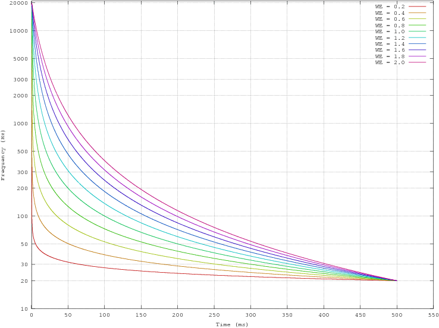
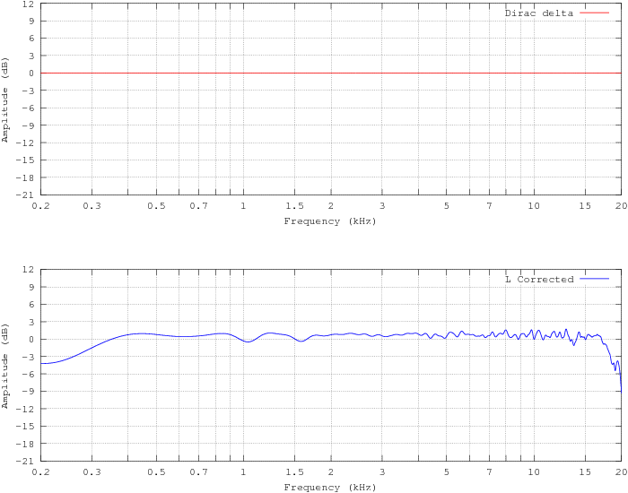
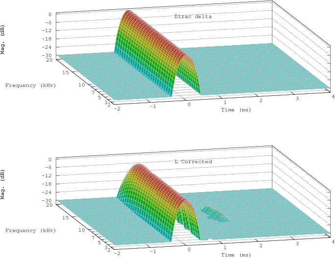

DRC: Digital Room CorrectionDenis Sbragion
2012-10-01
|
This program is free software; you can redistribute it and/or
modify it under the terms of the GNU General Public License as published
by the Free Software Foundation; either version 2 of the License, or (at
your option) any later version.
This program is distributed in the hope that it will be
useful, but WITHOUT ANY WARRANTY; without even the implied warranty of
MERCHANTABILITY or FITNESS FOR A PARTICULAR PURPOSE. See the GNU General
Public License for more details.
You should have received a copy of the GNU General Public
License along with this program; if not, write to the Free Software
Foundation, Inc., 675 Mass Ave, Cambridge, MA 02139, USA.
You can contact the author on Internet at the following address:
d.sbragion@infotecna.it
This program uses the FFT routines from Takuya Ooura and the GNU Scientific Library (GSL) FFT routines. Many thanks to Takuya Ooura and the GSL developers for these efficient routines.
DRC uses a lot of signal, linear system and DSP theory to achieve its results. In this user manual some knowledge about those arguments is assumed. I’m planning to write a more extensive manual with the basics needed to understand what DRC does, or at least is trying to do, but unfortunately I have just little spare time to dedicate to this project, so I will concentrate just on improving the program performances. Of course volunteers, suggestion, patches, better documentation, pointers and references on the subject are all appreciated.
For a basic introductory guide to DSP theory and practice you might look at:
http://www.dspguide.com/
For a basic introduction to DSP applied to audio you might read the good book available at:
To better understand what DRC is trying to do you might look at:
http://en.wikipedia.org/wiki/Digital_Room_Correction
This clear and concise Wikipedia article contains all the basics needed to understand digital room correction in general. Another interesting page is available at:
http://www.ludd.luth.se/~torger/filter.html
On this web page you’ll find some good explanations about the Nwfiir Audio Tools suite, which was a project, now discontinued, similar to DRC but implemented using warped FIR filters instead of the usual standard FIR filters.
Compared with the Nwfiir Audio Tools suite DRC does only the job carried out by the wfird program, generating just the FIR filters for digital room correction.
In order to measure the room impulse response and to perform real time or offline convolution (i.e. the correction) of the digital signal, you have to use some external programs, like, for example, BruteFIR (see section 2).
A good DRC step by step guide has been written by “Jones Rush”, and it is available at the following URL:
http://www.duffroomcorrection.com/images/d/de/DRC_Guide_v1.0.pdf
“Jones Rush” spent quite a lot of time learning the complete procedure needed to set up a full digital room correction system and also spent a lot of time writing the guide from the beginner’s point of view, so this is a really good starting point for everyone who has never played before with this sort of things. The guide is now a bit outdated, but despite this it is still a valid reference for the whole procedure of DRC filters creation. The main difference is in the name of the output file generated by the latest sample configuration files, which now is “rps.pcm” instead of “dxf.pcm”.
Ed Wildgoose is trying to create a collaborative documentation effort at:
http://www.duffroomcorrection.com/
Please, take the time to improve the available documentation and to share your experience participating to those nice Wiki pages. It could be really useful for other DRC users.
The official DRC web site is available at the following address:
http://drc-fir.sourceforge.net/
On the web site you will always find news and up to date informations, the full documentation for the latest version, informations about where to download it and many other DRC related informations. New DRC releases are announced using the Freshmeat announcement and tracking service. The Freshmeat DRC page is available at the following address:
http://freshmeat.net/projects/drc/
Minor accuracy improvements and minor changes to the default configuration templates have been introduced. Configuration file handling now is performed using the minIni library instead of the parsecfg library. A minor bug in the axis labeling of the Morlet cycle/octave scalograms has been corrected. The plot generation scripts have been reworked for better readability, better axis labeling and compatibility with the latest version of Octave.
Configuration files for version 3.2.0 are compatible with the the current version, but it is suggested to change PLStartFreq and PLEndFreq to match the new default values, i.e. 100 and 10000 respectively.
A new computation of the RMS value based on a logarithmic frequency weighting of the magnitude response has been introduced. This new method allow for a better handling of the filter magnitude response peak limiting. A bug in the extimation of the band limited RMS value has been also corrected. Some other procedures have been refined in order to provide an improved accuracy. The glsweep and lsconv tools have been reworked to provide correct reference levels thus allowing for SPL calibrated measurements.
The licensing of some file has been corrected. Minor corrections and accuracy improvements.
The Octave scripts have been reworked to make them compatible with the latest version of Octave and improved to provide some autoscaling features and exports to different image formats. The microphone compensation stage has been moved to the beginning of the correction procedure so that any following stage works using the compensated impulse response as a reference. A new parameter adding a configurable delay to the minimum phase version of the correction filter has been introduced. Many other minor bugs have been fixed.
The Octave scripts have been reworked to make them compatible with version 3 of Octave. A new renormalization procedure, providing a reasonable extimation of clipping levels, has been added. Many minor bugs have been fixed.
A new method for the computation of an optimized psychoacoustic target response, based on the spectral envelope of the corrected impulse response, has been introduced.
A new method for the computation of the excess phase component inverse, based on a simple time reversal, has been introduced. The sample configuration files have been rewritten to take advantage of the new inversion procedure. Sample configuration files for 48 kHz, 88.2 kHz, 96 kHz sample rates have been added. The homomorphic deconvolution procedure has been improved to avoid any numerical instability. A new Piecewise Cubic Hermite Interpolating Polynomial (PCHIP) interpolation method, providing monotonic behaviour, has been introduced in the target response computation. All the interpolation and approximation procedures have been rewritten from scratch to provide better performances and accuracy.
A new command line parameters replacement functionality has been introduced. The dip and peak limiting procedures have been improved in order to avoid numerical instabilities. A new wavelet based analysis graph has been added to the sample results. Many performance improvements have been introduced. A new optional parameter used to define the base directory for all files has been added.
Minor corrections and improvements have been applied to the documentation and to the pre-echo truncation inversion procedure. A new target transfer function definition procedure based on Uniform B Splines has been introduced. The development environment has been moved to Code::Blocks and GCC/MinGW.
A new prefiltering curve based on the bilinear transformation has been introduced. An improved windowing of the minimum phase filters used to apply the target frequency response and the microphone compensation has been implemented. A missing normalization of the minimum phase correction filter has been added. A new logarithmic interpolation has been added to the target transfer function computation. The new interpolation method simplifies the definition of the target transfer functions. Small improvements to the documentation and to the Octave scripts used to generate the graphs have been applied. A new improved version of the measurejack script has been included in the package. Some new sample configuration files, including one approximating the ERB psychoacoustic scale, have been added.
Small improvements to the documentation and to the Octave scripts used to generate the graphs. The sliding lowpass prefiltering procedure has been rewritten to make it a bit more accurate and to make the code more readable. Few other minor bugs have been fixed.
With version 2.5.0 a general overhauling of the filter generation procedure has been performed. Some steps (peak limiting for example) have been moved to a different stage of the procedure, and new stages have been added.
A new ringing truncation stage has been added to remove excessive ringing caused sometimes by the pre-echo truncation procedure. Now the filter impulse response is enclosed in a sort of psychoacoustic jail that prevent, or at least reduces a lot, any artifact that could arise as a side effect of the filter generation procedure. With this changes DRC becomes somewhat “self tuning” and now it is able to adapt itself to the input impulse response, at least to some extent, providing as much correction as possible without generating excessive artifacts.
The postfiltering stage, where the target transfer function is defined, has been split to provide a separate stage for microphone compensation. This allows for a greater flexibility defining both the target transfer function and the microphone compensation, and provides as a side effect correct test convolutions even when microphone compensation is in place. With the previous versions the test convolution was improperly altered by the microphone compensation, because both the target transfer function and the microphone compensation were generated and applied using the same filter.
Many other procedures have been refined. For example the peak and dip limiting procedures now ensure continuity up to the first derivative of the magnitude response on the points where the magnitude limiting starts its effect. This further reduces the ringing caused by abrupt changes in the magnitude response.
Finally many other minor bugs have been corrected and the documentation has been improved, switching to LATEX for document generation and formatting.
Version 2.4.2 added a better handling of underflow problems during homomorphic deconvolution. Some little speed improvements have been also achieved. Added search and output of peak value and peak position into lsconv.
Version 2.4.1 added some tools for accurate time aligned impulse response measurements. This make it possible to compensate for interchannel misalignments, at least up to a limited extent. Some minor bugs have been also corrected.
In version 2.4.0 the Takuya Ooura and GNU Scientific Library FFT routines have been included in the program. These routines are about 10 times faster than the previous routines, providing about the same accuracy. Furthermore some checks have been added to the sharpness parameters to avoid program crashes when these parameters are missing.
The FFT routines described above are available at:
http://www.gnu.org/software/gsl/
http://www.kurims.kyoto-u.ac.jp/~ooura/fft.html
In version 2.3.2 a new sharpness factor parameter has been added to the sliding low pass prefiltering procedure. This parameter provides a control between filtering sharpness and spectral spreading in the filter transition region. A new option to read and write double precision floating points files has been added. Some checks to warn when the input signal is too short to provide accurate results has been added.
In version 2.3.1 some minor corrections to the program have been performed and the documentation has been restructured. A new option to automatically count the number of lines in the target function and microphone compensation files has been added. A new optimized sample configuration file has been added.
Version 2.3.0 adds two parameters to control the gain limiting procedures. These parameters control a sort of “soft clipping” of the frequency response, avoiding ringing on abrupt truncations of the frequency response. A new parameter to select the magnitude type, either linear or expressed in dB, of the target frequency response has been added. The optional capability to perform microphone compensation has also been added. The license has been switched to the GNU GPL.
Version 2.2.0 added a sliding low pass procedure to the pre-echo truncation inversion procedure. This pre-echo truncation procedure is much more similar to the pre-echo sensitivity of our hear and so slightly better results are achieved. Furthermore the sliding low pass prefiltering procedure has been completely rewritten to provide better accuracy, especially with the short window lengths needed for pre-echo truncation.
Version 2.1.0 added two new parameters that allow for the windowing of everything coming more than few samples before the impulse center. Usually before the main spike there’s only noise and spuriae. I have found that in certain situations this small noise may lead to audible errors in the correction, so windowing it out in order to clean the impulse response is a good practice.
Version 2.0.0 added many new features that provides much better control on pre-echo artifacts problems. The most important change is the new pre-echo truncation inversion procedure. Loosely derived from Kirkeby fast deconvolution this new procedure truncates any pre-echo on the excess phase part inversion. This leads to something like minimum phase inversion on frequency ranges where a complete inversion would lead to pre-echo artifacts. This critical frequency ranges are usually no more than 5 or 6 and no wider than about 1/12 of octave for a typical room impulse response. Reducing the correction to minimum phase on so narrow bands has little or no subjective effect on the correction quality and allows for the correction of much longer windows, with much better overall results.
Avoiding pre-echo artifacts also provides the ability to create low input-output delay filters. The resulting delay is often low enough (few ms) to allow the use of these filters in home theater applications. For situations where even few ms aren’t adequate there’s now also an option to generate zero delay minimum phase filters. Minimum phase filters provides correction of the amplitude response and just the minimum phase part of the phase response.
In order to avoid pre-echo artifacts there are also many other aspects that should be taken into account. For a better explanation of the whole procedure and the selection method for the DRC parameters needed to achieve this result look at the section 4.6.1.
Version 2.0.0 adds also many other improvements, including the single side version of the prefiltering procedures and fixing for many minor bugs that where still laying around.
A test convolution stage is now also available. This convolves the input impulse response with the generated filter to get the impulse response after correction. The impulse response obtained by this method is usually really reliable. As long as the measurement microphone isn’t moved I have been able to verify the computed impulse response with less than 0.5 dB errors, which is impressive considering the cheap measurement set I use. In my situation may be that the computed corrected impulse response is even more accurate than the measured one, because of noise problems being doubled by my cheap measurement set in the second measure.
Version 1.3.0 provided some new features with respect to version 1.2.1:
DRC is a program used to generate correction filters for acoustic compensation of HiFi and audio systems in general, including listening room compensation. DRC generates just the FIR correction filters, which must be used with a real time or offline convolver to provide real time or offline correction. DRC doesn’t provide convolution features, and provides only some simplified, although really accurate, measuring tools. So in order to use DRC you need:
Since some time there are also some integrated packages provinding both the measurements functionality and the correction, based on DRC. Some examples:
This packages may be really useful, expecially for unexperienced peoples.
Many information and free programs useful for measuring and handling impulse responses are available at the NoiseVault web site:
http://www.noisevault.com/
Of course a good instrumentation microphone and preamplifier are needed to get accurate measurements of your listening room response. The ETF web sites has a link to a cheap but still quite good instrumentation microphone, which comes with an individual calibration file:
http://www.ibf-akustik.de/
It is built around the Panasonic electrect capsules (WM-60A and WM-61A) which can be used also to build a DIY microphone. Of course you won’t get the same quality of a professional instrumentation microphone, but it is enough to get good results. Some other good and inexpensive solutions are the Behringer ECM8000 measurement microphone (see http://www.behringer.com for details) and the Dayton Audio EMM-6:
http://www.daytonaudio.com/index.php/emm-6-electret-measurement-microphone.html
which provides also individual calibration files.
http://www-personal.umich.edu/~mressl/
http://www.winamp.com/
http://home.hccnet.nl/th.v.d.gronde/
Furthermore a ready to use Linux distribution suited for audio applications is available at Planet CCRMA:
http://ccrma-www.stanford.edu/planetccrma/software/
This distribution already contains most of what is needed to create a real time convolution engine suited for digital room correction.
On the DRC Wiki pages created by Ed Wildgoose there’s a document, created by Uli Brueggemann, on how to create a Linux mini distribution suited to run BruteFIR out of a USB memory stick. Take a look at:
http://www.duffroomcorrection.com/
and search for “BruteFIR on a USB memory stick”. Further informations about this option are available on the Acourate web site:
http://www.acourate.com/
Of course to test the program you can also apply the correction off-line on audio files ripped from ordinary audio CDs, burning the corrected files on some fresh CDR and listening to them using a standard CD player. This avoids the need of any dedicated hardware and lets you test DRC on your favourite CD player.
Since few years there are many good, silent and compact PCs designed for multimedia usage which could be used to build a complete noiseless real time convolver with little effort. For some examples take a look at:
http://www.cappuccinopc.com/
http://www.stealthcomputer.com/
http://www.tranquilpc.co.uk/
http://www.mini-itx.com/
The creation of a correction filter for room acoustic compensation is quite a challenging task. A typical acoustic environment is a non minimum phase system, so in theory it cannot be inverted to get perfect compensation. Furthermore a typical HiFi system in a typical listening room isn’t either a single linear system, but it is instead a different linear system for every different listening position available.
Trying to get an almost perfect compensation for a given position usually leads to unacceptable results for positions which are even few millimeters apart from the corrected position. The generation of a filter that provides good compensation of magnitude and phase of the frequency response of the direct sound, good control of the magnitude of the frequency response of the stationary field and an acceptable sensitivity on the listening position, requires many steps. Here it is a brief summary of what DRC does:
Almost each of these steps have configurable parameters and the optional capability to output intermediate results.
Of course I’m not sure at all that this is the best procedure to get optimal correction filters. There is a lot of psychoacoustic involved in the generation of room acoustic correction filters, so probably the use of a more psychoacoustic oriented procedure would give even better results. Any suggestion with respect to this is appreciated.
Within my HiFi system the application of the correction provides huge improvements. By the way my system no longer can be considered a normal HiFi system. It is actually much closer to a studio monitoring system placed in a heavily damped room. Furthermore there is also an high performance subwoofer, extending the response down into the infrasonic range, and everything has been tuned to provide the best results with the correction in place. For some example of the results achieved see appendix A.
The frequency dependent windowing is one of the most common operations within DRC. This type of windowing follow up directly from the fact that within a room the sensitivity of the room transfer function to the listening position is roughly dependent on the wavelength involved. This of course implies that the listening position sensitivity increase quite quickly with frequency.
This dependence has the side effect that the room correction need to be reduced as the frequency increase, or, seen from the other side, as the wavelength decrease. For this reason DRC tries to apply a correction that is roughly proportional to the wavelength involved. This approach has also some psychoacoustic implications, because our auditory system is conceived to take into account the same exact room behaviour, and so its own behaviour follow somewhat similar rules.
Within DRC the frequency dependent windowing is implemented with two different kind of procedures: band windowing and sliding lowpass linear time variant filtering. The first procedure simply filters the input signals into logarithmically spaced adjacent bands and applies different windows to them, then summing the resulting signals together to get the output windowed impulse response. The second procedure uses a time varying lowpass filter, with a cut-off frequency that decreases with the window length. The results are pretty similar, but usually the sliding lowpass procedure is preferred because it is less prone to numerical errors and allows for a bit more of flexibility.
Both procedures follow the same basic rules in order to define the type of windowing that gets applied to the input signal. The basic parameters are the lower window, i.e. the window applied at the lower end of the frequency range involved, the upper window, i.e. the window applied at the upper end of the frequency range, and the window exponent, i.e. the exponent used to connect the lower window to the upper window with a parametric function that goes as the inverse of the frequency. For a description of the parametric function used see section 6.4.8.
For example figure 1 show the typical set of prefiltering curves applied to the input impulse response by the normal.drc sample settings (see section 5.2). For this sample settings file the default setting for the window exponent, which is the WE parameter in the figure, is 1.0. The part of the input impulse response that is preserved, and so also corrected, is the one below the curves. The remaining part of the time-frequency plane is simply windowed out and ingored in the correction.
Looking at this figure it becomes pretty clear that only a tiny fraction of the time-frequency plane gets corrected by DRC. This tiny fraction pretty much defines the physical limits where digital room correction is applicable. Above this limit the listening position sensitivity usually becomes so high that even a small displacement of the head from the optimal listening position causes unacceptable results with the appearance of strong audible artifacts.

By the way it should be also taken into account that our ear perceives this time-frequency plane on a logarithmic frequency scale. Looking at the same graph on a logarithmic frequency scale, as in figure 2, it becomes clear that from our auditory system point of view a much bigger fraction of the time-frequency plane gets corrected. It becomes also clear that above 1-2 kHz only the direct sound gets corrected and that above that range room correction actually reduces to just minimalistic speaker correction.
While developing DRC I’ve read some informal notes on the Internet stating that on short time windows our perception of time should be considered on a logarithmic scale too. I’m not quite convinced that this assumption is actually true, but if such an assumption is correct our perception of the room correction would be as in figures 3 and 4. Even if this assumption is not true these graphs are pretty useful to make clearly visible the part of the time-frequency plane that gets corrected by DRC and becomes even more useful if also the Gabor limit is placed in the graph as in figure 5.
The Gabor limit is defined by the following simple inequality:
| Δ f Δ t > |
|
where f is frequency and t is time, and defines the limit of uncertainity in the time-frequency plane. This means for example that, looking at picture 5, when the window exponent goes below about 0.5 the frequency dependent windowing starts violating the Gabor inequality at least in some small frequency range. Within that range the room transfer function estimation performed by DRC becomes inaccurate and the room correction might be affected by appreciable errors in the evaluation of the room transfer function.
Starting with version 2.6.0 a prefiltering curve based on the bilinear transform has been introduced. This curve provides a better match with the typical resolution of the ear and also with the typical behaviour of the listening room. The windowing curve provides the same exact results as the previous windowing curve when the window exponent is set to 1.0, but provides a different behaviour when the window exponent is changed, as showed in figure 6. The closer approximation of the ear behaviour is clearly visible in figure 8, where it is shown that using an appropriate configuration of the windowing parameters it is possible to get a close to perfect match with the ERB psychoacoustic scale (see curves labeled ERB and erb.drc, which overlap almost perfectly).
Starting from version 2.7.0 this step is implicitely disabled. Considering that excess phase inversion is performed simply by time reversal of the excess phase component, pre-echo is implicitely limited by the frequency dependent windowing performed on the excess phase. The description of this step and the code performing it has been retained because it could be used for experimental reasons, especially considering that the reequalization to flat performed in this step is time reversed with respect to that performed in the excess phase pre-processing. This meas that a minimum phase reequalization performed in the pre-echo truncation is equivalent to a maximum phase reequalization in the excess phase pre-processing, and the other way around.
If enabled frequency dependent windowing is used to truncate the pre-echo caused by the inversion of the excess phase part of the impulse response. The truncation procedure is always the same but it is implicitely applied on the left side of the time-frequency plane instead of the right side, because inversion of the excess phase corresponds to a time reversal. A much shorter windowing is used because our ear is quite sensitive to pre-echo.
Windowing out part of the impulse response of the excess phase component of the correction filter of course makes it no longer an all-pass filter, i.e. the excess phase part no longer has a flat magnitude response. To compensate for this problem the excess phase component magnitude response is equalized back to flat using, after inversion, a minimum phase filter. This of course causes some post-ringing. Even though this usually happens only on few narrow bands, it might be quite audible, and gets limited by the subsequent ringing truncation stage.
Since version 2.5.0 a further frequency dependent windowing is applied directly to the filter after impulse response inversion and peak limiting. This is performed to remove any residual ringing caused by the previous steps, especially the dip and peak limiting steps, even though this implies some tradeoff on filter accuracy.
With this further step the filter impulse response gets enclosed in a sort of time-frequency jail defined by the excess phase windowing settings on the left side of the time-frequency plane and by the ringing truncation settings on the right side (see figure 7). Considering that this time-frequency bounds have also some psychoacoustic implications, with this time-frequency enclosure DRC should be able to truncate automatically any part of the correction that is probably going to cause audible artifacts. Following this lines DRC gains at least a bit of psychoacoustically based “self tuning” and should become more robust and less prone to artifacts.
Applying the Gabor inequality to the window length between the two curves of pre-echo and ringing truncation it is pretty easy to get an equivalent frequency resolution, as a function of center frequency, of the frequency dependent windowing procedure. This resolution could be compared, as in figure 8, to some standard smoothing procedures widely used within many audio applications, like fractional octave smoothing and the classical Bark and ERB psychoacoustic scales.
From figure 8 it is pretty clear that the correction resolution used by DRC is well above that of any of the standard smoothing procedures, at least with the normal.drc sample settings file (see section 5.2). This means that the correction should provide a perceived frequency response that is really close to the configured target frequency response.
The “erb.drc” resolution plot show the approximation of the ERB scale provided by the “erb.drc” sample settings file (see section 5.2. The approximation has been created assuming:
| Δ f Δ t = 2 |
instead of the usual Gabor inequality (see figure 5), i.e. assuming that the frequency dependent windowing with the settings used has a resolution that is about four times above the Gabor limit. This is a rough estimate of the true resolution achieved by the DRC procedure in this situation. This estimation has been derived considering the compound effect of the various overlapped windows applied at various stages of the filter generation procedure.
Starting from version 3.0.0 an optional stage, used to compute a target frequency response based on the psychoacoustic perception of the corrected frequency response, has been introduced. The target response is based on the computation of the magnitude response envelope of the corrected impulse response, which is an extension of the spectral envelope concept. This is performed before the application of the usual target response, so that the standard target response is not compensated back by this stage.
The spectral envelope is a concept which has been introduced in the field of speech synthesis and analysis and is defined simply as a smooth curve connecting or somewhat following the peaks of the signal spectrum. There are strong arguments and experimental evidence supporting this approach and the idea that our ear uses the spectral envelope for the recognition of sounds. The spectral envelope, for example, allow our ear to understand speech under many different conditions, whether it is voiced, whispered or generated by other means. These different conditions generate completely different spectrums but usually pretty similar spectral envelopes. The spectral envelope also easily explains why our ear is more sensitive to peak in the magnitude response and less sensitive to dips. A curve based on the peaks of the magnitude response is by definition little or not affected at all by dips in the frequency response.
In the speech recognition field many procedures have been developed to compute the spectral envelope. Some of them are based on Linear Predictive Coding (LPC), the Discrete Cepstrum, the so called “True Envelope” and finally the Minimum Variance Distortionless Response (MVDR). Most of these methods are optimized for speed, noise resilience and to provide good results in the voice spectrum range sampled at low sample rates, so they are not really suited for HiFi usage.
Within DRC a different procedure has been developed. This is a variation of the usual fractional octave smoothing procedure, using the parametric Hölder mean instead of the usual simple averaging. Furthermore the smoothing has been extended to provide the Bark and ERB scales resolution when applicable.
For the tuning of the parameters used in the magnitude response envelope computation some typical real world room magnitude responses have been taken. The computation parameters have been set so that the resulting magnitude response envelope provides a target response as close as possible to the inverse of the usual target responses suggested in the literature. An example is reported in picture 9. The same parameters have been tested also in some not so common room to check that they were still providing the expected results. Of course, considering that now the basic target response is provided by the inverse of the magnitude response envelope, the usual target responses are no longer needed, apart from subsonic or ultrasonic filtering, and should be set to flat. For this reason the flat response is now the default target for all standard configuration files. The standard target response stage should be used only to adjust the response to taste, but, unlike previous versions, for a neutral reproduction a flat response should be used.
From the subjective point of view a system equalized to the inverse of the magnitude response envelope usually sound really neutral. Even though most of the times the magnitude response envelope response is different among the various channels, resulting in an obvious channel misalignement if evaluated with the standard smoothing procedures, imaging usually improves, becoming more stable and focused. This appear to confirm that the estimation performed by the magnitude response envelope has to be close to the subjective perception of the magnitude response.
Starting from version 2.4.1 two simple command lines tools, glsweep (Generate Log Sweep) and lsconv (Log Sweep Convolution), are available to perform accurate time aligned impulse response measurements. These tools are based on the log sweep method for impulse response measurement, which is one of the most accurate, especially for acoustic measurements. This method is based on a special signal, which is a logarithmic sinusoidal sweep, that need to be reproduced through the system under test, and an inverse filter, which, when convolved with the measured log sweep, gives back the impulse response of the system.
The steps needed to get the impulse response are the following:
If full duplex is supported by the soundcard, recording may be performed using the same soundcard used for playing. Using two different soundcards or a CD Player for reproduction and a soundcard for recording usually provides worse results unless they are accurately time synchronized.
The lsconv tool allows also for the use of a secondary reference channel to correct for the soundcard frequency response and for any time misalignment caused by the soundcard itself, the soundcard drivers or the play and recording programs. This soundcard compensation of course works if the reference channel has the same behaviour of the measuring channel. The typical use of this feature would be the use of one channel of a stereo or multichannel soundcard to measure the system and another one used in a loopback configuration to get the reference channel needed to correct the soundcard itself.
With this configuration even with cheap soundcards it is pretty easy to get a ± 0.1 dB frequency response over the audio frequency range with near to perfect time alignment and phase response. Considering that the log sweep method ensure by itself a strong noise rejection (90 dB of S/N ratio is easily achievable even in not so quiet environments) and a strong rejection to artifacts caused by the system non linear distortions, with this method the final measurements usually have true state of the art accuracy.
Finally an important warning: playing the log sweep signal at an excessive level can easily damage your speakers, especially the tweeters. So be really careful when playing such a signal through your equipment. The “Jones Rush” guide (see section 1) provides some useful hints to help you in the use of this kind of tools without the risk of damaging your equipment. No responsibility is taken for any damage to your equipment, everything is at your own risk.
When executed without parameters the glsweep program gives the following output:
GLSweep 1.0.2: log sweep and inverse filter generation.
Copyright (C) 2002-2005 Denis Sbragion
Compiled with single precision arithmetic.
This program may be freely redistributed under the terms of
the GNU GPL and is provided to you as is, without any warranty
of any kind. Please read the file "COPYING" for details.
Usage: glsweep rate amplitude hzstart hzend duration silence
leadin leadout sweepfile inversefile
Parameters:
rate: reference sample rate
amplitude: sweep amplitude
hzstart: sweep start frequency
hzend: sweep end frequency
duration: sweep duration in seconds
silence: leading and trailing silence duration in seconds
leadin: leading window length as a fraction of duration
leadout: trailing window length as a fraction of duration
sweepfile: sweep file name
inversefile: inverse sweep file name
Example: glsweep 44100 0.5 10 21000 45 2 0.05 0.005 sweep.pcm inverse.pcm
The program output contains some brief explanation of the generation parameters and some sample options.
The longer the log sweep used the stronger the noise rejection of the measure. A 45 seconds log sweep usually gives more than 90 dB of signal to noise ratio in the final impulse response even when used in somewhat noisy environments, for example one where the computer used to do the measure is in the same room of the measured system, producing all of its fan noise. The output format is the usual raw file with 32 bit IEEE floating point samples. If you need to convert the sweep generated using the example above to a 16 bit mono WAV file you can use SoX with a command line like this one:
sox -t f32 -r 44100 -c 1 sweep.pcm -t wav -c 1 sweep.wav
SoX, can be downloaded at:
http://sox.sourceforge.net/
If you want to create a stereo WAV file to get also the reference channel you can use something like:
sox -t f32 -r 44100 -c 1 sweep.pcm -t wav -c 2 sweep.wav
The inverse filter doesn’t need to be converted to a WAV file because lsconv is already able to read it as is. If you need to convert a recorded sweep stored in a wav file back to a raw 32 bit floating point format use this command:
sox recorded.wav -t f32 recorded.pcm
If you have a stereo WAV file with both the measurement channel and the reference channel you can extract them into two files using:
sox recorded.wav -t f32 -c 1 recorded.pcm mixer -l sox recorded.wav -t f32 -c 1 reference.pcm mixer -r
provided that the recorded channel is the left one (“mixer -l” parameter) and the reference channel is the right one (“mixer -r” parameter).
When executed without parameters the lsconv program gives the following output:
LSConv 1.0.3: log sweep and inverse filter convolution. Copyright (C) 2002-2005 Denis Sbragion Compiled with single precision arithmetic. This program may be freely redistributed under the terms of the GNU GPL and is provided to you as is, without any warranty of any kind. Please read the file "COPYING" for details. Usage: LSConv sweepfile inversefile outfile [refsweep mingain [dlstart]] Parameters: sweepfile: sweep file name inversefile: inverse sweep file name outfile: output impulse response file refsweep: reference channel sweep file name mingain: min gain for reference channel inversion dlstart: dip limiting start for reference channel inversion Example: lsconv sweep.pcm inverse.pcm impulse.pcm refchannel.pcm 0.1 0.8
All files must be in the usual raw 32 bit floating point format. To get the impulse response without the use of a reference channel just use something like:
lsconv recorded.pcm inverse.pcm impulse.pcm
Where “recorded.pcm” is the recorded sweep, “inverse.pcm” is the inverse filter generated by glsweep and “impulse.pcm” is the output impulse response ready to be fed to DRC.
If you also want to use the reference channel use something like:
lsconv recorded.pcm inverse.pcm impulse.pcm reference.pcm 0.1
The “0.1” value is the minimum allowed gain for the reference channel inversion. 0.1 is the same as -20 dB, i.e. no more then 20 dB of the reference channel frequency response will be corrected. This is needed also to prevent numerical instabilities caused by the strong cut off provided by the soundcard DAC and ADC brick wall filters.
When used with the reference channel the main spike of the impulse response is always at exactly the same length of the log sweep used, provided that the two soundcard channels are perfectly synchronized. Of course this is usually true for all soundcards.
For example if a 10 seconds sweep is used the main spike will be exactly at 10 seconds from the beginning of the output impulse response, i.e. at sample 441000 if a 44.1 kHz sample rate is used.
If the main spike is at a different position it means that there’s some delay in the measurement channel, usually caused by the time the sound takes to travel from the speaker to the microphone. If this delay is different for different channels it means that there’s a time misalignment between channels that needs to be corrected. Up to a limited amount, and using some small tricks, DRC is already able to compensate for interchannel delays (see section 4.6.5). Some future DRC release will include better support for interchannel time alignment.
Under the “source/contrib/Measure” directory of DRC there’s a sample Linux shell script, called “measure”, that uses glsweep, lsconv, SoX and standard ALSA play and recording tools to automate the time aligned measurement procedure using a reference channel. This sample script can be used only under Linux and it is just a quick hack to allow expert users to automate the whole procedure. Use it at your own risk.
Furthermore this script has been developed with an old version of SoX (12.17.7) so it might need some changes to work with more recent versions. It also needs any related tools ready to be executed from the working directory, else it doesn’t work. When executed without parameters the script gives the following output:
Automatic measuring script. Copyright (C) 2002-2005 Denis Sbragion This program may be freely redistributed under the terms of the GNU GPL and is provided to you as is, without any warranty of any kind. Please read the file COPYING for details. Usage: measure bits rate startf endf lslen lssil indev outdev impfile [sweepfile] bits: measuring bits (16 or 24) rate: sample rate startf: sweep start frequency in Hz endf: sweep end frequency in Hz lslen: log sweep length in seconds lssil: log sweep silence length in seconds indev: ALSA input device outdev: ALSA output device impfile: impulse response output file sweepfile: optional wav file name for the recorded sweep example: measure 16 44100 5 21000 45 2 plughw plughw impulse.pcm
This script assumes that the measuring channel is on the left channel and that the reference channel is the right one. To use it just take a look at the sample command line provided above. You have to provide proper ALSA input and output devices, but “plughw” usually works with most soundcards.
Using 24 bits of resolution to measure an impulse response is usually just a waste of resources. In most rooms getting a recorded sweep with more than 60 dB of S/N ratio is close to impossible, so 16 bits of resolution are already plain overkill. On the other hand, thanks to the strong noise rejection provided by the log sweep method, a sweep S/N ratio of 60 dB is already high enough to get more than 90 dB of S/N ratio in the recovered impulse response, at least with a 45 s sweep running at a 44.1 kHz sample rate.
The impulse response is what DRC works on, so it is the impulse response that needs an high S/N ratio, not the sweep. If you really want a better impulse response S/N ratio, or if you measure in a noisy environment, increase the sweep length instead of using 24 bits of resolution. A longer sweep will improve the S/N ratio of the impulse response, increasing the resolution instead will provide no benefit at all.
Chris Birkinshaw created a modified version of the measure script which adds Jack support. The script is named “measurejack” and you can find it under the “source/contrib/MeasureJack” directory of the standard distribution. For informations about Jack take a look at:
http://jackit.sourceforge.net/
Finally Ed Wildgoose created a simple program with about the same functionality of the measure script. It works also under Windows and being written in C, instead of being a simple shell script, it is less dependent on other tools and usually provides a more reliable functionality. You can download it from:
Most cheap game oriented soundcards often include a sample rate converter in their design, so that input streams running at different sample rates can be played together by resampling them at the maximum sample rate supported by the soundcard DAC. Usually this is 48 kHz as defined by the AC97 standard. These sample rate converters often are of abysmal quality, causing all sort of aliasing artifacts.
Most deconvolution based impulse response measurement methods, including the log sweep method, are quite robust and noise insensitive, but cause all sorts of artifacts when non harmonic but signal related distortion is introduced, even at quite low levels. The aliasing artifacts introduced by low quality sample rate converters are exactly of this kind and are one of the most common cause of poor quality impulse response measurements and consequently of correction artifacts.
Despite this, most of the times good measurements are possible even out of cheap soundcards if the maximum sample rate supported by the DAC is used, usually 48 kHz, so that the soundcard internal sample rate converter isn’t used at all. You can change the impulse response sample rate after the measurement using high quality software sample rate conversion algorithms (see section 4.5), thus preserving the impulse response quality.
To check the quality of the impulse response measurement perform a loopback measurement, without using a reference channel else any measurement problem will be washed out by the reference channel compensation. The impulse response you get must be a single clean spike much similar to that of a CD Player (see for example the upper graph of picture 88, labeled “Dirac delta”). A bit of ringing before and/or after the main spike is normal, but anything else is just an artifact. Only when you are sure that the measurement chain is working as expected open the loopback and do the real measurement, eventually adding also a reference channel to compensate for any remaining soundcard anomaly.
If you have the impulse response sampled at a different rate than the one needed for the final filter, you need to convert the sample rate before creating or applying the filters. For example you might have a 48 kHz impulse response but you may need to filter standard CD output at 44.1 kHz. In this situation you can either convert the impulse response to 44.1 kHz before feeding it to DRC or you can convert the resulting filters to 44.1 kHz after DRC has created them. I generally prefer the first procedure, which leads to exact filter lengths in the DRC final windowing stage, but in both cases you need a good quality sample rate converter, which uses, for example, band limited interpolation. A reasonable choice, free both under Linux and Win32, is SoX, which may be downloaded at:
http://sox.sourceforge.net/
Recent versions of SoX include some top quality sample rate conversion routines. SoX also provides a lot of other features for sound files manipulation. For a reference on band limited interpolation take a look at:
http://ccrma-www.stanford.edu/~jos/resample/
Another free good sample rate converter comes from the shibatch audio tools suite. This sample rate converter provides a quality which is adequate for the task of converting the impulse response file before feeding it to DRC. You can find the shibatch audio tools at it at:
http://shibatch.sourceforge.net/
Proper tuning of the correction filter generation procedure easily provides a substantial improvement over the standard sample configuration files provided along with DRC (see section 5.2). To properly tune the filters to closely match your room behaviour there are many different issues that should be taken into account.
One of the main problems in digital room correction are pre-echo artifacts that arise when compensation accuracy is pushed above a certain threshold. This pre-echo artifacts usually occur on narrow bands and are easily audible as a sort of ringing or garble before transients or sharp attacks. In order to avoid them there are basicly two options:
DRC uses both options in different steps of the correction procedure. So in order to avoid pre-echo artifacts you basically have to:
The sample configuration files supplied are a good example of all these options combined together. In normal situations you can use them as they are changing only EPLowerWindow, EPWindowExponent, MPLowerWindow and MPWindowExponent to fit your needs.
One of the problems of real time correction is the prevention of DAC clipping caused by the filter intrinsic amplification. First of all the normalization factor to be used (see sections 6.12.9 and 6.2.10) depends on the convolver used. Some convolvers want the filter normalized to the 16 bit range, i.e. 32768, most others want a standard normalization, i.e. normalization to ± 1.0. For example BruteFIR needs a filter normalized to 1.0 to get 0 dB amplification between input and output.
All the normalization steps used within DRC, included those needed to output the final filter (see sections 6.12.10 and 6.2.11), accept four types of normalization:
For a detailed description of the four types of normalization see section 6.1.11.
The S normalization guarantees against overflows in the output stream, i.e. it guarantees that if any input sample is never greater than X than any output sample is never greater than X multiplied by the normalization factor. This means also that if the normalization factor is 1 and the input sample is never greater than 32767 (i.e. the input is a 16 bit stream) the output is never greater than 32767, i.e. a 16 bit DAC on output will never clip or overflow.
Anyway, using common musical signals, and depending on the filter frequency response, the use of the S normalization might lead to filters with a global gain substantially lower than 1 (0 dB), i.e. filters with a typical output level which is lower, most of the times much lower, than the input level. With such low levels part of the resolution of the DAC gets lost. With normal musical signals it is usually safe to use a filter with an S normalization factor greater than 1, because, considering the typical frequency response of a room, and the corresponding reversed frequency response of the filter, overflows would occur in frequency ranges where typically there is not enough musical signal to cause it.
A good extimation of an adequate normalization factor might be provided by the P normalization, which rescales the filter so that the highest peak in the magnitude response corresponds to a 0 dB gain. Contrary to intuition this doesn’t completely ensure that there would never be clipping on output, but for most common musical signals it usually provide a safe extimation without introducing excessive attenuation.
If you use BruteFIR one possible approach is to use 1 for the PSNormFactor and S for PSNormType and then use the rescaling and monitoring features of BruteFIR to boost the gain up to few dB below overflow with typical musical signal. You might try using a 0 dB white noise source as a sort of worst case situation.
Be careful setting the basic filter gain. I found that many recent musical recordings, especially compressed and rescaled pop music productions, cause output levels that are just 1 or 2 dB below the white noise worst case scenario. The degradation in the sound quality caused by DAC clipping is typically much more audible than the degradation you get loosing a single bit or less of your DAC resolution, especially if you use 16 bit DACs along with dithering or 24 bits DACs.
If you’re unable to perform a test using 0 dB white noise as the input signal and for some reason you don’t want to rely on the estimation performed by the P normalization, a simple rule of thumb is to use the E normalization with a normalization factor which is a couple of dB lower than the maximum gain allowed during peak limiting. With the standard configuration files, where the maximum allowed gain is never greater than about 6 dB, this means using a normalization factor around 0.3 − 0.4 with convolvers which use 1.0 as the 0 dB reference level like BruteFIR, or using something like 10000 - 13000 with convolvers which use 32768 as the 0 dB reference level.
The default configuration files all use the E normalization with a normalization factor set to 1, leaving the task of scaling the filter gain to avoid clipping to the convolver. With the default configuration files you should set the convolver gain to something below −6 dB, which is the default maximum gain allowed by the peak limiting procedure.
As most audio practitioneers already know, in a basic stereo loudspeaker configuration it is important that the distance between the loudspeakers and the listening position is exactly the same for both loudspeakers, and also not too different from the distance between the two loudspeakers themselves (the classical equilateral triangle placement). If this rule isn’t satisfied usually the stereo image become distorted and confused. With digital room correction enabled this rule becomes of paramount importance.
DRC doesn’t automatically compensate for delays caused by loudspeaker misplacement and having the two channels with near to perfect direct sound, both in phase and magnitude, makes any difference in the arrival time immediately and clearly audible, with a nasty phasey sound and a blurred stereo image. Less than 10 cm are enough to cause clearly audible problems, so take your time to measure the distance from both loudspeakers and the listening position before doing any measure, and also do your measures by placing the microphone exactly at the listening position.
Furthermore, with digital room correction it is worth to experiment with unusual speaker placements. Reflections from nearby walls are more difficult to correct when they are away from the main spike, so placing the speakers near to the walls, or may be even in the corners, might sometime give better results with DRC, provided that you place some absorbing material near the speakers to remove early reflections in the high frequency range, where DRC is able to correct only the direct sound.
This type of placement is exactly the opposite of what is usually done if you don’t use digital room correction, where it is usually better to try to put loudspeakers away from the walls to avoid early reflections, that cause major problems to the sound reproduction and almost always boomy bass. Anyway, remember that there is no ready to use recipe to find the best speaker placement, even with DRC in use, so a bit of experimenting is always needed.
DRC doesn’t compensate for channel level imbalance, so this should be done manually after correction by changing a little the filters level until a perfect balance is achieved. This is of course better achieved using an SPL meter with pink noise and proper weighting. Anyway after correction the two channels start having a frequency response that is pretty much the same, so achieving perfect balance becomes pretty easy even by ear. Just use a mono male, or, better, female voice, and adjust the filters level until the voice comes exactly from the center of both loudspeakers.
To achieve a good balance you might also use the level hints provided by DRC at the end of the correction procedure, provided that the measured impulse responses have levels that are directly related to the original levels of the channels, i.e. these levels haven’t been changed by the measuring procedure itself.
First of all the current DRC release is able to compensate for interchannel misalignment of only few samples, no more than ± 8 with the default configuration files. Furthermore accurate time aligned measurements must be supplied, using either the glsweep and lsconv tools with a reference channel or some other tool providing the same degree of accuracy.
To get this limited time alignment you have to execute the following steps:
Impulse center found at sample 1367280.
Take note of the impulse center value.
A proper tuning of the filters for your audio system and your listening room easily provides a substantial improvement over the standard configuration files. The best way to do this is to use the correction simulation provided by DRC and to check the results using the Octave scripts supplied with the documentation (see section A), but if you have little experience with measurements interpretation you can also try to tune the correction by simple listening to the results, even though it isn’t an easy task.
One of the most common mistakes performed in the tuning procedure is the use of an excessive correction, which initially gives the impression of a good result, but cause also the appearance of subtle correction artifacts that becomes audible only with some specific musical tracks. These artifacts often have a peculiar resonant behaviour so they become audible only when they get excited by specific signals. To learn how to recognize them try using the ”insane.drc” sample configuration file, which applies an overly excessive amount of correction, causing clearly audible artifacts on all but the most damped rooms.
The best procedure to use is to start from the minimal amount of correction, like that provided by the minimal.drc or erb.drc correction settings. If your impulse response measurements are of good quality these minimalistic correction settings should already provide a substantial improvement over the uncorrected system, without any perceivable artifact. If this doesn’t happen it’s better to first double check the measurements performed before fiddling with the correction parameters. Remember that measurements problems are the most common cause of unsatisfactory correction results.
After this first test you can slowly switch to stronger correction settings using the soft.drc, normal.drc, strong.drc and extreme.drc settings, always listening to the results after each step, if possible using quick switching between the filters. When correction artifacts start to arise, which usually happens between the normal.drc settings and the extreme.drc settings, it’s time to stop and to start playing with some specific correction parameters.
The first parameters to modify are those that define the windowing correction curve applied to the signal, i.e MPWindowExponent, EPWindowExponent, RTWindowExponent, slowly reducing them to 0.95, 0.9, 0.85 and so on, down to about 0.7, thus reducing the correction in the critical mid and mid-bass range. These are really sensitive parameters, so changing them by as little as 0.01 easily cause an audible difference, especially when you are close to the boundary where correction artifacts start to appear. When the artifacts disappear you can start increasing the windows applied to the bass range, slowly increasing, by about a 5% at a time, the MPLowerWindow, EPLowerWindow, RTLowerWindow parameters, until artifacts start to appear again. After that you can decrease again the window exponent parameters until artifacts disappear again, and so on.
This procedure may be repeated until there’s no further improvement or the parameters reach an excessive value, i.e below about 0.6 for the window exponents, above 1 second for the minimum phase and ringing truncation windowing parameters (MPLowerWindow, RTLowerWindow) and above 100 ms for the excess phase windowing parameter (EPLowerWindow). Remember also to set the pre-echo truncation parameters (ISPELowerWindow, ISPEUpperWindow) according to the excess phase windowing parameters (see sections 6.8.4 and 6.8.5).
Of course the tuning procedure has to be carefully adapted to your specific room, so, after a good tuning has been reached following the basic procedure, you can further try playing a little with the available parameters, applying even different values to each of them, proceeding one at a time to avoid confusion. By the way, be careful, because after the initial tuning the differences between the filters will start to be quite subtle, most of the times will be barely audible, and quick switching between the filters, possibly even under blind conditions, will become almost mandatory to really understand what’s happening and which filter is better or at least audibly different.
DRC can be compiled either under Win32 or Linux, but because of its simplicity it will probably work under most operating systems with a decent C++ compiler with support for the standard template library (STL). The Win32 executable (drc.exe) is provided precompiled with the standard DRC distribution under the sample directory, where there are also the executables for the impulse response measuring tools (glsweep.exe and lsconv.exe).
A Makefile is provided for Linux and other Unixes, but it has been tested only under Fedora Core 11. To build the program under Linux usually what you have to do is just type “make” in the source directory of DRC, where the makefile resides. A Code::Blocks workspace is also available for use both under Win32 and Linux. Code::Blocks can be downloaded at:
http://www.codeblocks.org/
The file drc.h contains a configurable define (UseDouble) which can be set to use double or float as the data type used for all internal computations. Despite some microscopic differences in the final output, I have never found any real advantage using doubles as the internal basic type.
During the testing for the 3.1.0 release I have performed some tests to check the signal to noise ratio of the output filters. Despite the amount of processing performed and the fact that little effort has been placed into keeping the maximum accuracy throughout the processing, even using single precision arithmetic the signal to noise ratio of the final filter resulted to be greater than 140 dB in the worst case. This is more than 20 dB better than the signal to noise ratio provided by the best DACs available in the world.
Considering these results the supplied Win32 executable is compiled for single precision. If you want to switch to the double precision you have to recompile it yourself. Of course using the double data type makes DRC a bit slower and, most important, much more memory intensive.
Starting from version 2.4.0 DRC is able to use the Takuya Ooura and GNU Scientific Library FFT routines, which are included in the distributed package. The inclusion of these routines is controlled by the UseGSLFft and UseOouraFft defines in drc.h. These routines are about 10 times faster than the standard routines used by DRC, but to use them with the STL complex data type a clumsy hack has been used, and it is not guaranteed that this hack will work with all the STL implementations available. If it causes any problem simply comment out the UseGSLFft and UseOouraFft defines in drc.h and recompile the program. This will force DRC to use the older, slower but STL compliant FFT routines.
The accuracy of the different FFT routines is pretty much the same. The Ooura routines work only with powers of two lengths, so they are used only with power of two lengths computations. Ooura FFT routines are somewhat faster than the GSL routines but are also a little bit less accurate. The default configuration uses only the GSL FFT routines, providing the best compromise between speed and accuracy. The Ooura FFT routines become useful when DRC is compiled for double precision arithmetic.
Most text files supplied with the standard distribution use Unix line termination (LF instead of CR/LF). Be aware of this when opening files under Win32 systems. WordPad is able to open LF terminated text files, NotePad isn’t.
Finally an important note, especially for Win32 users. DRC is a console program, it has no graphical interface. All program execution parameters must reside in a plain ASCII text file which is supplied as an argument on the program command line. In order to execute the program you have to open a command prompt (or DOS Prompt or whatever is named a console in your version of Windows) and type something like:
drc test.drc
followed by a carriage return (enter or return key). Test.drc should be the text file already prepared with all the parameters needed to run DRC.
Under Linux of course you have to use a console program (the Linux console, a terminal emulator like XTerm or something like this if you are using XWindows). The DRC executable must be in the system path or in the directory where you execute.
Starting from version 2.6.2 all the parameters available in the configuration file may be replaced by an equivalent parameter on the command line. For example if you want just to change the input and output filter files of the normal.drc sample configuration file you may use a command like this:
drc --BCInFile=myfile.pcm --PSOutFile=myfilter.pcm normal.drc
The parameter parsing procedure supports also quoting of filenames with spaces and setting of strings to empty values, which is the same as commenting a parameter in the configuration file. For example to use some filename with spaces, to disable the output of the test convolution file, to change the maximum allowed gain, all in a custom configuration file with spaces in its name, you could use a command line like this:
drc --BCInFile="my file.pcm" --PSOutFile="my filter.pcm" --TCOutFile="" --PLMaxGain=3.5 "my custom config.drc"
Along with all the default configuration parameters there is also a special “–help” parameter that show the full list of all the available parameters with the associated parameter type. The list of the parameters is really long, so some pager is needed to see them all.
DRC has started as an experimental program and because of this it has a lot of tunable parameters, actually more than 150. Only few of them are really important for the final filter correction quality. Most of them are used just to take a look at intermediate results and check that everything is working as expected. DRC flexibility might of course be used also to deal with complex or unusual situations or to experiment with weird configurations.
Along with the DRC distribution six main sample configuration files are provided: minimal-XX.X.drc, soft-XX.X.drc, normal-XX.X.drc, strong-XX.X.drc, extreme-XX.X.drc, insane-XX.X.drc. The ”XX.X’ in the file name stands for the sample rate in kHz which the file is configured for. For example ”normal-44.1.drc” is the normal configuration file for the 44.1 kHz sample rate. Considering that the only difference between the files is the base sample rate they are configured for, in the rest of this document all files are named omitting the sample rate part.
The sample configuration files provide most parameters set to reasonable defaults, with stronger correction, but also worse listening position sensitivity, going from the minimal.drc settings to the extreme.drc settings. In the same directory of the configuration file there is also a sample impulse response (rs.pcm, this is the impulse response of the right channel of my previous HiFi system, in 32 bit IEEE raw format) usable with the sample configuration files to see just what happens when DRC is run.
The insane correction settings are not meant for normal use but are used just to provide an example of excessive correction that is going for sure to cause audible correction artifacts. Using these settings file you can easily check how correction artifacts actually sound like, thus learning to identify them within normal filters while you are tuning them for your audio system (see section 4.6.6).
Another interesting sample configuration is the one provided by the “erb.drc” file. This file provides an accurate approximation of the ERB psychoacoustic scale (see figure 8). It is important to notice that basicly the correction isn’t much stronger than the “minimal.drc” sample configuration, but being approximately tuned to our ear psychoacoustic resolution it is probably going to provide a good perceived correction accuracy with minimal listening position sensitivity, and so it is well suited for multiple listeners situations, like home theater applications.
Starting form version 2.7.0 all sample configuration files are available for 44.1 kHz, 48 kHz, 88.2 kHz, 96 kHz sample rates. By the way you should be careful with sample rates above 44.1 kHz because most of this sample files have been simply derived from the 44.1 kHz version without testing them in real life situations. The sample configuration files for the higher sample rates aren’t in the sample directory. To avoid placing a lot of similar files in the same directory the files for the higher sample rates are placed in the ”src/config” directory.
Remember also that all the sample correction files output the correction filter (rps.pcm) in 32 bit floating point format normalized to 1.0, which is the format suited for use with BruteFIR. Most sound editors expect 16 bits integer files normalized to 32768, so the file above might look either empty or completely clipped when opened with a sound editor without using the appropriate options.
Starting from version 3.0.0 the basic target magnitude response is automatically generated by DRC using a specific procedure based on some documented psychoacoustic assumptions. See section 4.3 for the details. Because of this there should be no need to define a specific target curve and a flat target, with just some limiting for subsonic and ultrasonic frequencies, should be used instead. This is accomplished by using the pa-XX.X.txt target, which is now the default for all standard configuration files and is just a variation of the previous flat target adjusted to better work with the “B Spline” target transfer function interpolation procedure. The old target responses are retained for those situations where the old approach may be preferable, and may be found under the ”source/target” directory. Of course the postfiltering stage might be used to adjust the magnitude response to taste, but for a neutral reproduction the target magnitude response should be left to the flat one.
The most important postfiltering target magnitude response files supplied in the standard distribution (see section 6.12.7 “PSPointsFile” for details) are subultra-XX.X.txt, bk-XX.X.txt, bk-2-XX.X.txt, bk-3-XX.X.txt (see figure 10). Here again ”XX.X” stands for the sample rate used and is omitted in the rest of this document. The target response files for the higher sample rates are available in the ”src/target” directory.
The first target response file provides just simple removal of overcompensation on the extremes of the frequency range and has a linear target frequency response, so it hasn’t been plotted in figure 10. The bk.txt file follows the Bruel & Kjaer (i.e. Mœller) recommendations for listening room frequency response, i.e. linear from 20 Hz to 400 Hz, followed by a slow decrease of 1 dB per octave up to 20 kHz. The bk-2.txt file is similar to bk.txt but it is linear up to 200 Hz and then provides a slow tilt of 0.5 dB per octave up to 20 kHz. The bk-3.txt file is somewhat between bk-2.txt and bk.txt, with a 0.5 dB per octave tilt above 100 Hz. The versions with the “sub” suffix are the same target functions with the addition of a steep subsonic filter. The versions with the “spline” suffix are again the same target transfer functions but with a set of control points suitable for the “B Spline” target transfer function interpolation. Figure 10 also show an example of PCHIP interpolation of the "bk-3-sub" target function. In the sample directory there are also some other simple postfiltering target files.
Like the sample configuration files starting from version 2.7.0 the sample target responses are available for 44.1 kHz, 48 kHz, 88.2 kHz and 96 kHz sample rates and they must be used with the corresponding set of configuration files. By the way the target response files for higher sample rates are simply extended versions of the 44.1 kHz target responses created by simply moving the last frequency point up to the Nyquist frequency. This means that for most configuration files there is either a gentle roll-off at higher frequency or a supersonic brickwall filter applied above 20 kHz. If you want to properly correct content above 20 kHz, provided that you have a microphone capable of recording ultrasonic frequencies, you have to adapt the supplied files to your needs.
The DRC configuration file is a simple ASCII file with parameters in the form:
ParamName = value
Everything after a ’#’ and blank lines are considered comments and are ignored. Each parameter has a two character prefix which defines the step the parameter refers to. These prefixes are:
DRC does some checks to ensure that each parameter provided has a value that makes sense, but it isn’t bulletproof at all with respect to this. Providing invalid or incorrect parameters values may cause it to fail, or even to crash.
Parameters which are important for the quality of the generated filters are marked with (*). When it makes sense a reasonable value or range of values is also provided, but the range supplied is always referred to the 44.1 kHz sample rate.
Many parameters have often a value which is a power of two. This is mainly for performance reasons. Many steps require one or more FFT computations, which are usually much faster with arrays whose length is a power of two. The default values supplied are defined for a 44.1 kHz sample rate. If a different sample rate is used the supplied values should be scaled accordingly.
This parameter define the base directory that is prepended to all file parameters, like for example BCInFile, HDMPOutFile or PSPointsFile. This parameter allow the implicit definition of a library directory where all DRC support file might be placed.
File parameters supplied on the command line are not affected by this parameter unless the BCBaseDir parameter is also supplied on the command line. File parameters supplied in the configuration file are instead always affected by the BCBaseDir parameter, no matter if it has been supplied in the configuration file or on the command line.
Just the name of the input file with the input room impulse response.
The type of the input file. D = Double, F = Float, I = Integer.
The sample rate of the input file. Usually 44100 or 48000.
The impulse response impulse center may be set manually using the BCImpulseCenter parameter or you may ask DRC to try to find it automatically. If BCImpulseCenterMode is set to A DRC will look for the impulse center within the input file. If BCImpulseCenterMode is set to M DRC uses the impulse center supplied with the BCImpulseCenter parameter.
Be careful when using automatic impulse center recognition. Strong reflections or weird situations may easily fool the simple procedure used by DRC, which simply looks for the sample with the maximum absolute amplitude.
This is the position, in samples, of the time axis zero of the impulse response read from BCInFile. Usually this is where the peak of the impulse response is, but for complex situations it might not be easy to identify where the zero is. Even few samples displacement in this parameter may cause high frequency overcorrection, causing too bright sound. If BCImpulseCenterMode is set to A this parameter is ignored.
Initial portion of the impulse response which is used to perform the correction. It should be long enough to accomodate for any subsequent windowing performed by DRC. The window is symmetrical with respect of the impulse center. If needed, the signal is padded with zeroes. Usual values are between 16384 and 131072, depending on the values of the parameters for the subsequent steps. This initial window may be further limited in subsequent steps, which sets the real window used.
This is the length of the window used to remove any noise coming before the impulse center. This is usually just few samples, with a typical value of 1024 samples, corresponding to 23.2 ms at a 44.1 kHz sample rate. If this value is 0 this step is skipped
This is the central flat gap left in the previous windowing operation. Usually it is set to 0.75 * BCPreWindowLen, i.e. 768 samples with the standard BCPreWindowLen value.
Initial normalization of the input impulse response. 0 means no normalization, which is the default.
Type of normalization applied. M means max normalization, i.e. the input signal is rescaled so that the maximum value of the samples is equal to the normalization factor. E means Euclidean normalization (L2 Norm), i.e. the input signal is rescaled so that the RMS value of the signal is equal to the normalization factor. S means sum normalization (L1 Norm), i.e. the input signal is rescaled so that the sum of the absolute values of the samples is equal to the normalization factor. P means peak normalization i.e. the input signal is rescaled so that the highest peak in the signal magnitude response is equal to the normalization factor.
These parameters are used to set a mild dip limiting on the input impulse response. For a detailed description of these parameters see the similar procedure described in section 6.5. This stage is used just to prevent overflow or underflow problems in subsequent stages so under standard conditions there is no need at all to change these parameters.
Within this stage the microphone transfer function is invertend and applied to the input impulse response to compensate for any microphone aberration. If you want a microphone compensated filter you have to enable this stage.
The inversion is carried out by direct inversion of the values supplied in the microphone compensation file. So it is assumed that the microphone response is easily invertible. This is usually true with any decent microphone.
This is the type of filter used for the microphone compensation stage stage. N means that the mic compensation stage is disabled, L means linear phase filtering, M means minimum phase filtering.
This parameter is the same as the PSInterpolationType parameter (see section 6.12.2) but applied to the mic compensation filter. The default is H.
The multiplier exponent used for the homomorphic deconvolution used to compute the minimum phase compensation filter. Usually a value of 2 or 3 is used.
Length of the FIR filter used for microphone compensation. Usually between 16384 and 65536.
Number of points used for the definitions of the microphone frequency response. If this parameter is 0 DRC automatically counts the number of lines in the microphone frequency response file. See the following parameters for details about the microphone frequency response compensation.
This is the name of the file which contains the microphone frequency response to be compensated. The file format is identical to the one defined for the target frequency response (see section 6.12.7). Again any phase specification get wiped out if minimum phase filtering is used. This usually isn’t a problem because most microphones suited for measurement tasks are minimum phase systems, so the minimum phase compensation filter already has exactly the phase response needed to compensate for the microphone phase response.
In the sample directory there’s a sample compensation file (wm-61a.txt) which is a generic compensation file for the Panasonic WM-61A electrect capsule. This file has been derived from average values available on the Internet, so don’t expect to get perfect linear frequency response using it. There could be some difference among different capsules of the same type. In the same directory there’s also a compensation file for the Behringer ECM8000 instrumentation microphone. This is the measured frequency response of a single unit, i.e. it isn’t even derived from an average over many samples, so it may be even less reliable than the WM-61A compensation file.
This parameter selects how the amplitude of the target frequency response is defined. L means linear amplitude (0.5 means half the level, i.e about −6 dB), D means that the amplitude is expressed in dB.
This parameter set the file where the impulse response of the microphone compensation filter will be saved. This might be useful to take a look at the microphone compensation filter or to use it into some other program. By default it is disabled, i.e. commented out.
Final window after microphone compensation. Default value set to 0, i.e. no windowing applied.
Normalization factor for the microphone compensated impulse response. Usually 0.0, i.e. disabled.
Normalization type for the microphone compensated impulse response. Usually E.
Output file for the microphone compensated impulse response. Disabled, i.e. commented out, by default. The file generated by enabling this parameter might be used as input for the “createdrcplots” Octave script to generate the uncorrected response graph using a microphone compensated uncorrected response (see section A for more details).
Output file type for the microphone compensated impulse response. D = Double, F = Float, I = Integer.
Exponent of the multiplier of the FFT size used to perform the homomorphic deconvolution. The FFT size used is equal to the first power of two greater than or equal to BCInitWindow * (2 HDMultExponent). Higher exponents give more accurate deconvolution, providing less circular convolution artifacts.
With older DRC versions achieving low circular artifacts was not so important because they were masked by the higher pre-echo artifacts in other steps. Starting with version 2.0.0 it is possible to achieve really low pre echo artifacts so circular artifacts now are an issue, because when truncated by the pre-echo truncation inversion procedure they may cause errors on the phase correction. In this situation a value of at least 3 is suggested.
Normalization factor for the minimum phase component. Usually 1.
Normalization type for the minimum phase component. Usually E.
Output file for the minimum phase component. Usually not used (commented out).
Output file type for the minimum phase component. D = Double, F = Float, I = Integer.
Normalization factor for the excess phase component. Usually 1.
Normalization type for the excess phase component. Usually E.
Output file for the excess phase component. Usually not used (commented out).
Output file type for the excess phase component. D = Double, F = Float, I = Integer.
This parameter can be either B for the usual band windowing prefiltering stage or S for the sliding lowpass method. The first method splits the input response into log spaced bands and window them depending on some parameters but basically with a window length which decrease exponentially with the center frequency of the band. The sliding lowpass method instead filters the impulse response with a time varying lowpass filter with a cutoff frequency which decreases exponentially with the sample position with respect to the time axis zero. This last one is a stepless procedure.
Using either a lowercase b or s for the MPPrefilterType parameters enable the single side version of the prefiltering procedures. The procedure is applied starting from the impulse center, leaving the first half of the impulse response unchanged. This gives less pre-echo artifacts, and should be used when the pre-echo truncation inversion procedure is used. Please remember to set the prefiltering parameters to values which are adequate for the procedure used.
This parameter sets the type of prefiltering function used, i.e. P for the usual inverse proportional function, or B for the bilinear transform based prefiltering function. For a comparison between the two functions see figure 6. The default is B.
This parameter changes a little the window function (Blackman) used for the band windowing prefiltering stage. It sets a small flat unitary gap, whose length is expressed in samples, at the center of the window function, so that even if the impulse center is slightly misaligned with respect to the time axis zero there is no high frequency overcorrection. For band windowing prefiltering procedure usually this overcorrection is in the order of 0.1 − 0.2 dB at 20 kHz for errors of 2 to 3 samples, so it is not important at all in real world situations, but if you want to fix even this small problem this parameter lets you do it.
MPWindowGap should never be more than 2 sample less than MPUpperWindow and it is usually no more than few samples (5 to 10). If in any situation it is bigger than the calculated window DRC automatically reduces the gap to 2 less than the applied window. When MPWindowGap is 0 DRC behaves exactly as in the older versions. For the sliding lowpass procedure this sets just the window gap used for the initial windowing before the procedure starts.
Length of the window for the minimum phase component prefiltering at the bottom end of the frequency range. Longer windows cause DRC to try to correct a longer part of the impulse response but cause greater sensibility to the listening position. Typical values are between 16384 and 65536. MPLowerWindow must not be greater than BCInitWindow.
Length of the window for the minimum phase component prefiltering at the upper end of the frequency range. Longer windows cause DRC to try to correct a longer part of the impulse response but cause greater sensibility on the listening position. Typical values are between 22 and 128. MPUpperWindow must be not greater than MPLowerWindow, and usually is much shorter than that.
Start frequency for the prefiltering stage. Usually 20 Hz or just something less.
End frequency for the prefiltering stage. Usually set at 20 kHz, i.e. 20000. Of course you must be using a sample rate which is greater than 40 kHz to set this above 20 kHz.
This is the exponent used in the frequency dependent window length computation for the band windowing procedure, or in the computation of the time dependent cutoff frequency for the sliding lowpass procedure.
The window length for band windowing is computed with the following expression:
| W = |
|
Where W is the window length, F is the normalized frequency, WE is the window exponent, A and Q are computed so that W is equal to MPLowerWindow at MPStartFreq and is equal to MPUpperWindow at MPEndFreq. If you set MPLowerWindow equal to the value used for MPInitWindow in DRC 1.2, set MPWindowExponent to the same value of version 1.2 and set MPUpperWindow to the value you got at the upper limit of the frequency range in version 1.2 you should get results much similar to the 1.2 DRC release.
In a similar way the cutoff frequency for the sliding lowpass prefiltering stage is computed with:
| F = |
|
with identical parameters but reversed perspective, i.e. the cutoff frequency is computed from the window length and not the other way around. In both cases W and F are considered normalized between 0 and 1.
These parametric functions are used when the proportional function is selected using the MPPrefilterFctn (see section 6.4.2) parameter. The parametric functions derived from the bilinear transformation are quite different and more complicated, so they aren’t explained here.
Changing the window exponent provides different prefiltering curves, see section 4.2 for a deeper explanation. Increasing the window exponent gives higher correction in the midrange. Typical values are between 0.7 and 1.2.
Filter length, in taps, used to perform band splitting or sliding lowpass prefiltering of the input signal. Higher values give better filter resolution but require a longer computation. Typical values for band windowing are between 4096 and 65536. Sometimes may be useful to use short filters (64 - 512 taps) to get a more “fuzzy” correction at lower frequencies.
With the sliding lowpass procedure similar filters should be used. Usually the filter length is in the 512 - 65536 range. Short filters (16 - 64 taps) gives a similar fuzzy correction at the bottom end, but with a different behaviour than band windowing.
This parameter applies only to the sliding lowpass prefiltering procedure and control the sharpness of the filtering performed in the filtered region of the time-frequency plane. A value of 1.0 provides the same behaviour of version 2.3.1 of DRC and provides the maximum allowable filtering sharpness without affecting the direct sound, but also creates a substantial amount of spectral spreading in the filter transition region of the time-frequency plane. Values above 1.0 increase the spectral spreading up to a point where it starts affecting also the direct sound, with the introduction of some ripple in the direct sound itself. Values below 1.0 reduce the spectral spreading in the filtered region at the expense of a little reduction in the filter sharpness. Typical values for this parameter are between 0.1 and 0.75, with a default value of 0.25.
Fractional octave splitting of band windowing. Band windowing is performed in 1 / MPBandSplit of octave bands. Usual values are between 2 and 6. The higher this value the higher should be MPFilterLen. Values greater than 6 usually give no improvements.
For the sliding lowpass prefiltering this just gives the rate at which log messages are reported during the prefiltering procedure and has no effect on the prefiltering procedure itself, which is always stepless.
After prefiltering the minimum phase component may be no longer minimum phase, with a bit of excess phase component added. Setting this parameter to Y enable a second homomorphic deconvolution on the prefiltered minimum phase component to make it minimum phase again. This is important especially if the pre-echo truncation inversion procedure is used. This procedure assumes that the minimum phase part really is minimum phase, so skipping this step may cause it to fail in avoiding pre-echo artifacts.
Setting this to Y causes the excess phase part of the filtered impulse response to be preserved after the MPHDRecover step. This excess phase part is then convolved with the excess phase part of the filtered impulse response to preserve it and invert it. This provides a slight improvement in the direct sound phase response. The default value is Y.
Exponent of the multiplier of the FFT size used to perform the homomorphic deconvolution described above. The FFT size used is equal to the first power of two greater than or equal to MPPFFinalWindow * (2 MPHDMultExponent). Higher exponents give more accurate results, but require a longer computation. Usually a value of 2 or 3 is used. If this parameter is less than 0 no multiplier will be used. Be careful because if the FFT size isn’t a power of two the procedure can take a long time to complete.
Final window of the prefiltering stage. Usually the same as MPLowerWindow or just something more. If set to 0 no windowing is applied.
Normalization factor for the minimum phase component after prefiltering. Usually 0.
Normalization type for the minimum phase component after windowing. Usually E.
Output file for the minimum phase component after band windowing. Usually not used (commented out).
Output file type for the minimum phase component after windowing. D = Double, F = Float, I = Integer.
To prevent numerical instabilities during the inversion stage, deep dips in the frequency response must be limited or truncated. This parameter sets the type of dip limiting performed. L means linear phase, i.e. it applies a linear phase filter that removes dips below a given threshold, M means minimum phase, i.e. it uses a minimum phase filter to achieve the same result. Both procedures are also available with a logarithmic frequency weighting of the magnitude response, so that, for example, the 20 Hz - 200 Hz range weigths the same as the 2000 Hz - 20000 Hz range. Setting DLType to P activates the log weighted verions of the linear phase dip limiting and setting DLType to W activates the log weighted verions of the minimum phase dip limiting.
Starting with version 2.0.0 DRC performs this step only on the prefiltered minimum phase part, just before performing the second homomorphic deconvolution, if enabled. So if the MPHDRecover parameter is set to Y and the MPEPPreserve parameter is set to N there is almost no difference between the two procedures, because the subsequent homomorphic deconvolution stage wipes out any phase difference giving just a minimum phase signal. Any difference would be caused just by numerical errors.
This is the minimum gain allowed in the frequency response of the prefiltered signal. Values lower than this will be truncated. Typical values are between 0.1 and 0.5. These are absolute values with respect to the RMS value, i.e. 0.1 is about −20 dB, 0.5 is about −6 dB.
Start frequency where the reference RMS level used for dip limiting is computed.
End frequency where the reference RMS level used for dip limiting is computed.
Setting this parameter to a value between 0.0 and 1.0 enables the “soft clipping” dip limiting procedure. Everything below DLStart * DLMinGain , with respect to the RMS value, get rescaled so that it ends up between DLStart * DLMinGain and DLMinGain. Values for this parameter usually are between 0.5 and 0.95, with a typical value of 0.75. Setting this parameter to a value equal to or greater then 1.0 cause DRC to switch to hard clipping of the frequency response.
Exponent of the multiplier of the FFT size used to perform the dip limiting stage. The FFT size used is equal to the first power of two greater than or equal to (MPBWFinalWindow + EPBWFinalWindow − 1) * (2 DLMultExponent) . Higher exponents give more accurate dip limiting, but requires a longer computation. Usually a value of 2 or 3 is used. If this parameter is less than 0 no multiplier will be used. Be careful because if the FFT size isn’t a power of two the procedure might take a long time to complete.
The excess phase prefiltering is performed pretty much the same way as the minimum phase prefiltering, so the parameters are almost identical, even though with different values.
Same as MPPrefilterType but for the excess phase component.
Same as MPPrefilterFctn but for the excess phase component.
Same as MPWindowGap but for the excess phase component.
Same as MPLowerWindow but for the excess phase component. Typical values are between 1024 and 4096. As a rule of thumb you can take:
| EPLowerWindow = MPLowerWindow / A |
with A going from 16 to 32 and a typical value of 24. EPLowerWindow must be not greater than BCInitWindow.
Same as MPUpperWindow but for the excess phase component. Typical values are between 22 and 128. As a rule of thumb you can take:
| EPUpperWindow = MPUpperWindow |
Start frequency for the prefiltering stage. Usually 20 Hz or just something less.
End frequency for the prefiltering stage. Usually set at 20 kHz, i.e. 20000. Of course you must be using a sample rate which is greater than 40 kHz to set this above 20 kHz.
Same as MPWindowExponent but for the excess phase component. See discussion on MPWindowExponent. Usual values for this parameter are between 0.5 and 1.2, depending on the value of EPInitWindow. As a rule of thumb you can take:
| EPWindowExponent = MPWindowExponent |
Filter length, in taps, used to perform band splitting of the input signal or sliding lowpass prefiltering. Higher values gives better filter resolution but require a longer computation. Typical values for band windowing are between 4096 and 65536. Sometimes may be useful to use short filters (64 - 512 taps) to get a more “fuzzy” correction at lower frequencies.
With the sliding lowpass procedure similar filters should be used. Usually the filter length is in the 512 - 65536 range. Short filters (16 - 64 taps) gives a similar fuzzier correction at the bottom end, but with a different behaviour than band windowing.
This value is usually equal to MPFilterLen.
Same as MPFSharpness but applied to the excess phase part.
Fractional octave splitting of band windowing. Band windowing is performed in 1 / MPBandSplit of octave bands. Usual values are between 2 and 6. The higher this value the higher should be MPFilterLen. Values greater than 6 usually give no improvements.
For the sliding lowpass prefiltering this just gives the rate at which log messages are reported and has no effect on the prefiltering procedure, which is always stepless.
This value is usually equal to MPBandSplit.
Final window of the prefiltering stage. Usually the same as EPInitWindow or just something more. If set to 0 no windowing is applied.
After band windowing the excess phase component usually need reequalization to get the flat frequency response it must have. This is the gain applied with respect to the RMS level of the signal to get this flat frequency response. Usually 1, a value of 0 disables this step. Skipping this step, i.e. setting this parameter to 0, usually gives bad results.
This parameter controls how the excess phase flattening set by the previous parameter is performed. Setting this to 0 tries to get a perfectly flat excess phase component, as in version 1.3.0 of DRC. This parameter has been introduced to balance between the need of a flat excess phase response and a perfect control of the direct sound, usually achieved without any flattening. Unfortunately so far the supposed balance always proved really difficult to find in any real world situation, so this parameter is always set to 0 in the standard configuration file. The procedure has been left just for experimental purposes if some unusual situation need to be handled.
Furthermore this parameter applies only to the linear phase and minimum phase excess phase flattening, it isn’t available for the D type of excess phase flattening.
This is the type of procedure adopted for the excess phase component renormalization. L means applying linear phase renormalization, M means applying minimum phase renormalization, D means applying another homomorphic deconvolution stage to extract just the excess phase component of the prefiltered excess phase component. L applies a linear phase filter that equalizes the excess phase amplitude response to flat, M means minimum phase, i.e. it uses a minimum phase filter to achieve the same result. The D procedure provides the same effect of the M procedure when EPPFOGainFactor is equal to 0. Any difference is just caused by numerical errors.
Exponent of the multiplier of the FFT size used to perform the frequency response flattening. The FFT size used is equal to the first power of two greater than or equal to EPBWFinalWindow * (2 EPPFFGMultExponent) . Higher exponents give more accurate results, but require a longer computation. This parameter should be set using the same criteria described in HDMultExponent. If this parameter is less than 0 no multiplier will be used. Be careful because if the FFT size isn’t a power of two the procedure might take a long time to complete.
Normalization factor for the excess phase component after band windowing. Usually 0, i.e. disabled.
Normalization type for the excess phase component after windowing. Usually E.
Output file for the excess phase component after windowing. Usually not used (commented out).
Output file type for the excess phase component after windowing. D = Double, F = Float, I = Integer.
The prefilter completion stage combines the prefiltered minimum phase and excess phase parts together again. The impulse response recovered after prefilter completion defines the impulse response of the system as seen by the correction applied by DRC.
Final window after prefiltering completion stage and before impulse inversion. This is usually between 8192 and 65536. Values greater than 65536 make no sense, giving a filter resolution lower than 1 Hz at a 44.1 kHz sample rate. Furthermore inversion of signals longer than 65536 samples may require a lot of time. Starting with version 2.0.0 this step is no longer needed with the pre-echo truncation fast deconvolution inversion method, which works directly on the minimum and excess phase components from the prefiltering stages. So if PCOutFile is not defined and ISType is set to T this step is completely skipped.
Normalization factor for the prefiltered signal. Usually 0, i.e. disabled.
Normalization type for the prefiltered signal. Usually E.
Output file for the prefiltered signal. Usually not used (commented out).
Output file type for the prefiltered signal. D = Double, F = Float, I = Integer.
Type of inversion stage. L uses the usual Toeplitz least square inversion, T activates the pre-echo truncation fast deconvolution.
This sets the type of pre echo truncation applied when ISType is T. f means a fixed pre-echo truncation, s means a time dependent pre-echo truncation applied using the usual single side sliding low-pass procedure, but with reversed behaviour, i.e. only what comes before the impulse center is processed. Starting with version 2.7.0 this is set to f and pre-echo truncation is basicly disabled because it is already carried out by the excess phase prefiltering procedure.
Same as MPPrefilterFctn but for the pre-echo truncation windowing. It is used only when ISPETType is set to s.
When ISPETType is f this is the number of samples before the impulse center where the inverted impulse response is considered pre-echo. Starting with version 2.7.0 this is is usually set to half the value of EPLowerWindow so that the pre-echo truncation procedure provides just a mild windowing. When ISPETType is s this is the number of samples considered pre-echo at the ISPEStartFreq frequency, with a typical value equal to EPLowerWindow.
When ISPETType is f this is the number of samples before the impulse center where the pre-echo region, defined by the previous parameter, ends, and the full impulse response of the inverted filter should start. Starting with version 2.7.0 this is usually set to about 0.75 * ISPELowerWindow so that the pre-echo truncation procedure is limited to a mild windowing used only to avoid small steps in the impulse response attack caused by small numerical errors. When ISPETType is s this is the number of sample considered pre-echo at the ISPEEndFreq frequency, with a typical value equal to EPUpperWindow.
Start frequency for the sliding low pass pre-echo truncation procedure. Usually 20 Hz. Used only when ISPETType is s.
End frequency for the sliding low pass pre-echo truncation procedure. Usually 20000 Hz. Used only when ISPETType is s.
Length of the filter used for the pre-echo truncation sliding lowpass procedure. Usually 8192. Used only when ISPETType is s.
Same as MPFSharpness, but applied to the inversion stage pre-echo truncation. Here slightly bigger values usually provide better results because of the shorter windowing. Used only when ISPETType is s. The default value is 0.5.
For the sliding lowpass prefiltering this just gives the rate at which log messages are reported and has no effect on the prefiltering procedure, which is always stepless. Used only when ISPETType is s.
Window exponent applied to the pre-echo truncation sliding lowpass procedure. Usual values goes from 0.5 to 1.5, with a typical value of 1.0. Used only when ISPETType is s.
This parameter has the same effect of the EPPFOGainFactor (see section 6.6.14) but applied to the renormalization of the excess phase part of the inverse filter after pre-echo truncation. Used in conjunction with the EPPFOGainFactor parameter, this parameter can be used to balance the amount of correction applied to the direct sound compared to the amount of correction applied to the reverberant field. A negative value disables the renormalization. Default is 0.0.
This is the exponent of the multiplier for the S inversion stage, using the longest of the input and output signals as a basis. This parameter should be set using the same criterion used for the MPHDMultExponent parameters and a values of at least 3 is suggested.
Final window after inversion stage. Usually 0, i.e. disabled, with the L type inversion stage. With the S type this is the output filter size and can be any length but usually is between 8192 and 65536. If it is 0 than a length equal to MPPFFinalWindow + EPPFFinalWindow − 1 , i.e. the length of the convolution of the two components together, is assumed and no windowing is applied to the output filter.
Normalization factor for the inverted signal. Usually 0, i.e. disabled.
Normalization type for the inverted signal. Usually E.
Output file for the inverted signal. Usually not used (commented out).
Output file type for the inverted signal. D = Double, F = Float, I = Integer.
This stage computes a psychoacoustic target response based on the magnitude response envelope.
Defines the type of psychoacoustic target filter to use. N means no filter, thus skipping the psychoacoustic target stage completely. M means that a minimum phase filter is used and L means that a linear phase filter is used. The default is M.
This parameter define the size used to window the corrected impulse response. The windowed response is then used to compute the magnitude response envelope that the target response is based upon. Usually a portion of the impulse response going from 150 ms to 500 ms is used. The default value is 26460, corresponding to a symmetric window, 300 ms long on each side, at 44100 Hz sample rate.
These parameters are used to set a small dip limiting on the corrected impulse response in order to avoid numerical problems in the inversion of the magnitude response envelope. For a detailed description of these parameters see the similar procedure described in section 6.5. This stage is used just to prevent overflow or underflow problems so under standard conditions there is no need at all to change these parameters.
This parameter define the resolution used for the computation of the magnitude response envelope. It is defined as fraction of octaves, so a value of 0.25 means a resolution of 1/4 of octave. Values below 0 down to -1 causes the adoption of the Bark scale, values below -1 causes the adoption of the ERB scale. The default value is -2, which means that the computation is performed on the ERB scale.
This parameter define how close the magnitude response envelope will be to to the peaks in the unsmoothed spectrum. Higher values provide a closer match. Typical values are between 5 and 30, with the default value, based on documented psychoacoustic assumptions, set to 15. Values above 50 are probably going to cause numerical problems and should be avoided.
Multiplier exponent for the computation of the magnitude response envelope. Default is 0.
Length of the psychoacoustic target filter. Default set to 65536.
Output file for the psychoacoustic target filter. Usually not used (commented out).
Output file type for the psychoacoustic target filter. D = Double, F = Float, I = Integer.
Normalization factor for the inverted signal after convolution with the psychoacoustic target filter. Usually 0, i.e. disabled.
Normalization type for the inverted signal after convolution with the psychoacoustic target filter. Usually E.
Output file for the inverted signal after convolution with the psychoacoustic target filter. Usually not used (commented out).
Output file type for the inverted signal after convolution with the psychoacoustic target filter. D = Double, F = Float, I = Integer.
Normalization factor for the inverted signal after convolution with the psychoacoustic target filter. Usually 0, i.e. disabled.
The peak limiting stage limits the maximum allowed gain of the filter to prevent amplification and speaker overload.
Type of peak limiting applied. L means linear phase, M means minimum phase, P means log weighted linear phase, W means log weighted minimum phase. For an explanation of the log weighted versions of the procedures see section 6.5.1. If PSFilterType is set to T PLType should be set to M or W to ensure that the initial zero valued part is preserved. Since version 3.1.2 the default and suggested value for this parameter is W.
Maximum gain allowed in the correction filter. Peaks in the correction filter amplitude response greater than this value will be compressed to PLMaxGain. Typical values are between 1.2 and 4. These are absolute values with respect to the RMS value, i.e. 1.2 is about 1.6 dB and 4 is about 12 dB. This peak limiting stage is used to prevent speaker or amplifier overloading, resulting in dynamic range limitations which are subjectively worse than some narrow dip in the frequency response. A typical value is 2.0, i.e. 6 dB.
Setting this parameter to a value between 0.0 and 1.0 enables the “soft clipping” peak limiting procedure. Everything above PLStart * PLMaxGain , with respect to the RMS value, get rescaled so that it ends up between PLStart * PLMaxGain and about PLMaxGain. Values for this parameter usually are between 0.5 and 0.95, with a typical value of 0.75. Setting this parameter to a value equal to or greater than 1.0 switch to hard clipping of the magnitude response.
Start frequency where the reference RMS level used for peak limiting is computed. Default value set to 100 Hz. This value should be set typically to something like an octave above the minimum reproducible frequency of your speakers.
End frequency where the reference RMS level used for peak limiting is computed. Default value set to 10000 Hz. This value should be set typically to something like an octave below the maximum reproducible frequency of your speakers.
Exponent of the multiplier of the FFT size used to perform the peak limiting stage. The FFT size used is equal to the first power of two greater than or equal to PSOutWindow * (2 PLMultExponent) . Higher exponents give more accurate peak limiting, but requires a longer computation. Usually a value of 2 or 3 is used. If this parameter is less than 0 no multiplier will be used. Be careful because if the FFT size isn’t a power of two the procedure can take a long time to complete.
Final window after peak limiting. Usually 0, i.e. disabled.
Normalization factor for the final filter. Usually 0, i.e. disabled.
Normalization type for the peak limited filter, usually E.
Output file for the peak limited filter. Usually disabled (commented out).
Output file type for the final filter. D = Double, F = Float, I = Integer.
The ringing truncation stage applies a further frequency dependent windowing to the correction filter. The truncation parameters are pretty similar to those of the prefiltering stage and usually have also much similar values.
This parameter can be either B or b for the band windowing method, S or s for the sliding lowpass method or N to disable the ringing truncation stage. See section 4.2 and 6.4.1 for further details.
Same as MPPrefilterFctn but for the ringing truncation windowing.
This parameter changes a little the window function (Blackman) used for the band windowing or the sliding lowpass windowing. See section 6.4.3 for further details.
Length of the window at the bottom end of the frequency range. Usually set to the same value of MPLowerWindow.
Length of the window at the upper end of the frequency range. Usually set to the same value of MPUpperWindow.
Start frequency for the windowing. Usually 20 Hz or just something less.
End frequency for the windowing. Usually set to 20000.
This is the exponent used in the frequency dependent window length computation for the band windowing procedure, or in the computation of the time dependent cutoff frequency for the sliding lowpass procedure. See section 6.4.8 for further details. Usually set to the same value of MPWindowExponent.
Filter length, in taps, used to perform band splitting or sliding lowpass prefiltering of the input signal. Usually the same as the one used in the prefiltering stage.
This parameter applies only to the sliding lowpass prefiltering procedure and control the sharpness of the filtering performed in the filtered region of the time-frequency plane. See section 6.4.10 for further details.
Fractional octave splitting of band windowing. See section 6.4.11 for further details.
Final window of the stage. Usually set to 0, i.e. disabled.
Normalization factor for the minimum phase component after windowing. Usually 0.
Normalization type for the minimum phase component after windowing. Usually E.
Output file for the filter after windowing. Usually not used (commented out).
Output file type for the filter after windowing. D = Double, F = Float, I = Integer.
During the postfiltering stage the final target transfer function is applied to the filter and the filter is normalized to suitable values for the convolver used.
This is the type of filter used for the postfiltering stage. L means the usual linear phase filtering, M means minimum phase filtering, T means minimum phase filtering with initial zero truncation. If the pre-echo truncation inversion is used and the final post filtering stage is minimum phase all the filter taps before ISPELowerWindow are zero (there could be some roundoff errors that make them different from zero, but considering them zero makes no difference for our needs). So this initial all zero part can be windowed out without changing the filter behaviour. This way the filter becomes almost zero delay, providing a delay of just ISPELowerWindow samples. This sometimes may be low enough to make it usable even with home theater systems where audio delay is a major issue. Of course to ensure that the initial all zero part is preserved the minimum phase peak limiting should also be used.
This parameter defines the type of interpolation used between the points of the target transfer function. L means the usual linear interpolation, G means logarithmic interpolation, i.e. interpolation performed on a bilogarithmic scale, R means interpolation using Uniform Cubic B Splines, S means interpolation using Uniform Cubic B Splines on a bilogarithmic scale, P means interpolation on a linear scale using a monotone Piecewise Cubic Hermite Interpolating Polynomial (PCHIP), H means interpolation on a logarithmic scale using PCHIP. The logarithmic interpolation makes the definition of the target transfer function easier, without the need to define intermediate points to get the desired behaviour on a bilogarithmic scale. The default is S.
The B Splines interpolation options allow for the definition of smooth target transfer functions which provides less ringing. Be careful when using this option because defining the right control points to get the desired target transfer function might be tricky. B Splines don’t interpolate the supplied points but are instead tangent to the lines connecting the control point. If you want sharp corners in the transfer function just place few close control points near to the desired corner. Remember that B Splines of the type used are unaffected by control points which are more than two control points away from any given point on the curve. Take a look at the supplied examples for some simple transfer function definition.
The PCHIP procedure provides a monotonic interpolation procedure. The resulting target is less smooth than the one supplied by B Splines, but being a true interpolation PCHIP makes the definition of the control points much easier.
The use of the B Spline or PCHIP interpolation procedures is often useful also for the definition of the mic compensation transfer function, especially when only few points are available.
The multiplier exponent used for the homomorphic deconvolution used to compute the minimum phase post filter. Usually a value of 2 or 3 is used.
Length of the FIR filter used during the postfiltering stage. Usually between 16384 and 65536.
Number of points used for the definition of the post filter frequency response. If this parameter is 0 DRC automatically counts the number of lines in the post filter definition file. See the following parameters for further details about the post filter frequency response.
This parameter selects how the amplitude of the target frequency response is defined. L means linear amplitude (0.5 means half the level, i.e about −6 dB), D means that the amplitude is expressed in dB.
File containing the post filter frequency response definition. This file should contain PSNumPoints lines, each line in the form “Frequency Gain”, with the gain expressed as a linear gain or in dB depending on the PSMagType parameter value. The following examples are in dB. The first line must have a frequency equal to 0, the last line must have a frequency equal to BCSampleRate / 2 . A post filter definition file must have the following format:
0 -40 18 -20 20 0 20000 0 21000 -40 22050 -100
This is for a 44.1 kHz sample rate.
The post filter stage is usually used to prevent overcompensation in the subsonic or ultrasonic range, but may be used also to change the target frequency response from linear to a more euphonic one.
Starting from version 2.0.0 DRC lets you specify the phase for the target post filter stage. Phase specification should be placed after the amplitude specification and should be expressed in degrees. Following the example above:
0 -40 0 18 -20 45 20 0 90 20000 0 180 21000 -40 90 22050 -100 0
If not specified a value of 0 is assumed. Setting a phase different than 0, i.e. flat, is useless within normal HiFi systems in almost all circumstances. Furthermore the phase specification is used only if the PSFilterType is L, else any phase specification is wiped out by the minimum phase filter extraction.
Final window after post filtering. This is also the length of the generated correction filter. Usual values are between 8192 and 65536. Filter with 65536 taps gives about 0.5 Hz resolution at 44.1 kHz sample rate, 16384 is usually enough for most situation and 8192 gives somewhat good results with much less computing needs during real time convolution.
Normalization factor for the correction filter. Usually 1.0. See section 4.6.2 for some instructions on how to set this parameter.
Normalization type for the correction filter. Usually E. See section 4.6.2 for some instructions on how to set this parameter.
Output file for the correction filter. This file contains the filter to be used with the convolution engine.
Output file type for the correction filter. D = Double, F = Float, I = Integer.
The minimum phase extraction stage creates a minimum phase filter from the correction filter. A minimum phase filter corrects just the magnitude response and the minimum phase part of the phase response, but it is usually almost artifacts free and as basically zero latency. If microphone compensation is enabled the filter includes microphone compensation.
Exponent of the multiplier for the homomorphic deconvolution used to extract a zero delay minimum phase version of the correction filter. A value of 2 or 3 is usually enough.
Output window size for the minimum phase filter. Typical values are about half of PLOutWindow.
This parameter add an initial delay to the filter, making it possible to align it with other filters. Usually it is set to the same value assigned to EPLowerWindow, so that the filter has the same latency of the mixed phase filter when PSFilterType is set to T. If you want a zero delay filter set this parameter to 0.
Normalization factor for the minimum phase filter. The same considerations of section 4.6.2 should be applied.
Normalization type for the minimum phase filter. Usually E. See section 4.6.2 for some instructions on how to set this parameter.
Output file name for the minimum phase filter.
Output file type for the minimum phase filter.
Normalization factor for the output of the final convolution stage. Usually 0.0.
Normalization type for the output of the final convolution stage. Usually E.
Output file for the final test convolution. If this is not supplied the test convolution stage is skipped.
Output type for the file above. D = Double, F = Float, I = Integer.
DRC grew up with the contribution of many peoples. The list is really long, and there’s some chance that I’m forgetting someone. By the way here it is the list, in random order:
Finally many thanks to all the peoples who have contributed to DRC, sometimes without even knowing it. Most of the ideas used to develop DRC come from public papers, algorithms and source code found for free over the Internet.
There are other software packages providing functionalities similar or comparable to those of DRC. Here are some examples:
A complete commercial package, based on DRC for the filter generation procedure, is available from the small Italian company AVA Italy. I have no involvement in the development of the product so those interested in this package should contact AVA Italy directly. Contact informations are available on the AVA Italy web site:
http://www.avaitaly.it/
In the following pages some graphs with a comparison between the corrected and uncorrected system are reported. This is of course just a sample situation and describes what I achieved in my own system. My uncorrected system show performance figures which are quite uncommon, partly because it is placed in an heavily damped listening room but mostly because it has been tuned to give its best with the correction in place. So the results for the uncorrected system shouldn’t be taken as an example of typical behaviour. The results of the corrected system show instead the perfomance levels achievable combining active room correction with traditional passive room treatment. Depending on the behaviour of the speakers and the listening room, and on the settings used for DRC, the results could be quite different.
The results presented have been obtained with the psychoacoustic target stage disabled. All the graphs presented in these section are based on traditional objective evaluation of the system transfer function. No psychoacoustics is involved in the graphs generation procedures, so the results with the psychoacoustic target cannot be evaluated using this kind of graphs. On the other hand the proposed graphs clearly show that the correction is able to closely match the supplied target, so proving that any psychoacoustic target computation would be closely followed by the correction. This implies that, if the underlying psychoacoustic model is correct, the results will be as expected.
All the graphs, except the spectrograms and other 3D plots, follow the same conventions. The uncorrected system is reported with red lines and the corrected system is reported with blue lines. The spectrograms and the 3D plots need a specific colormap for proper visualization, which is of course the same for both the corrected and uncorrected system, so they can’t follow this simple convention.
All the graphs have been prepared with the Octave files available under the “src/doc/octave” directory of the standard distribution. The “createdrcplots.m” file contains a function which creates all the graphs needed to compare two impulse responses and saves them into encapsulated postscript files or files in any other format supporte by Octave. To load the raw pcm files created by DRC you can use the “loadpcm” function with some Octave commands like:
ru = loadpcm("/pathtopcm/rmc.pcm");
rc = loadpcm("/pathtopcm/rtc.pcm");
The uncorrected response could be obtained by uncommenting the MCOutFile parameter and setting it properly. If you don’t have a microphone compensation file you can simply use the flat target response to provide a null compensation and get the needed output file only. The corrected response could be obtained by uncommenting the TCOutFile parameter and setting it properly. Then the full sets of graphs will be created with an Octave command like:
createdrcplots(ru,-1,"R Uncorrected",rc,-1,"R Corrected","/pathtographs/","R");
Graph in a different format than the standard encapsulated postscript may be easily obtained by suppling some further parameters to the createdrcplots procedure. For example to create the graphs in PNG format a command like this might be used:
createdrcplots(ru,-1,"R Uncorrected",rc,-1,"R Corrected","/pathtographs/","R",".png","-dpng");
All formats supported by the Octave print command may be used. Se the Octave documentation for further details.
You need at least Octave 3.2.3, along with Octave-Forge packages “plot” and “signal”, and GnuPlot version 4.3 or newer, for these scripts to work. The scripts have been tested with octave 3.6.2 and GnuPlot 4.4.4. Beware that the latest versions of Octave don’t use Gnuplot as the default plotting toolkit so you might need to issue a command like:
graphics_toolkit('gnuplot');
to get the scripts working. Octave can be downloaded from:
http://www.octave.org/
Michele Spinolo prepared a LATEX document which packages the full set of graphs into a single file. The LATEX script is named “drc-graphs.tex” and is available under the “src/doc” directory. The script could be used for pdf or postscript file creation, or to create HTML files using HeVeA, and maybe also wiht Latex2Html. The graphs should be created using “T” as the graphs prefix name in the “createdrcplots” function above, else you have to edit the header of the script to change the graph prefix. HeVeA and Latex2Html are available at the following sites:
http://www.latex2html.org/
http://pauillac.inria.fr/~maranget/hevea/
The first series of graphs show the effect of the correction in the time domain. The correction provides a clear improvement in the time response, with an effect that becomes longer and longer in time as the frequency decrease, as expected.
These series of graphs show the effect of the correction on the frequency response magnitude for some different windows applied to the time response and with different kind of smoothing applied.
This section show some phase response graphs. The phase response becomes basicly linear at least for the direct sound, which implies also a constant group delay.
In this section some joint time-frequency analysis results are presented. Time-frequency graphs are more difficult to understand than the graphs presented so far, but they provide also invaluable information about how the system under test is working. The human ear works using a joint time-frequency analysis too, so these graphs provide a representation of the system behaviour that is much closer to our subjective perception.
Many graphs show the spectral decay of the system. The spectral decay isn’t exactly the same as the cumulative spectral decay (CSD) often used for loudspeaker analysis, even though it is strictly related to it. The spectral decay is obtained using an oversampled short-time Fourier transform of the impulse response, being careful to use a window that is long enough to satisfy the Gabor inequality (see section 4.2 and figure 5 for details).
The correct interpretation of the graphs presented in this section would require a book by itself, so little words are spent describing the results achieved. With respect to this any comment is welcome.
The wavelet analysis is a different method for performing a time-frequency analysis or, to be precise, a time-scale analysis. For certain kind of wavelets the scale axis could be mapped to a frequency scale, allowing for the usual time-frequency interpretation of the time-scale plots.
Wavelets have the advantage of being easier to map to a logarithmic frequency scale. To further help the correct interpretation of the graphs the time scale is also stretched, depending on the frequency, so that the time scale is expressed in cycles of the sine wave of the corresponding frequency. The end result is a graph that provides a tiling of the time-frequency plane which is visually quite close to the kind of time-frequency analysis performed by our auditory system.
The graphs are classical cycle-octave scalograms based on the Morlet wavelet, tuned for different tradeoffs between time and frequency resolution.
The following series of graphs show the comparison between a Dirac delta and the corrected left channel. The Dirac delta is the mathematical representation of a “perfect” system i.e. a system which outputs a perfect copy of its input. Looking at these graphs it is possible to see both what is left uncorrected by DRC and what a “perfect” system looks like on this kind of graphs. The graphs are presented in the same order of the previous graphs.


This document was translated from LATEX by HEVEA.